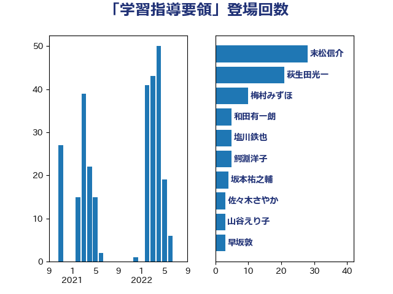

単語「学習指導要領」

| 末松信介 | 自由民主党 | 28 回 |
| 萩生田光一 | 自由民主党 | 21 回 |
| 梅村みずほ | 日本維新の会 | 10 回 |
| 和田有一朗 | 日本維新の会 | 5 回 |
| 塩川鉄也 | 日本共産党 | 5 回 |
| 鰐淵洋子 | 公明党 | 5 回 |
| 坂本祐之輔 | 立憲民主党 | 4 回 |
| 佐々木さやか | 公明党 | 3 回 |
| 山谷えり子 | 自由民主党 | 3 回 |
| 早坂敦 | 日本維新の会 | 3 回 |
| 鈴木俊一 | 自由民主党 | 3 回 |
| 上野通子 | 自由民主党 | 2 回 |
| 串田誠一 | 日本維新の会 | 2 回 |
| 勝目康 | 自由民主党 | 2 回 |
| 塩村あやか | 立憲民主党 | 2 回 |
| 池田佳隆 | 自由民主党 | 2 回 |
| 舩後靖彦 | れいわ新選組 | 2 回 |
| 藤巻健太 | 日本維新の会 | 2 回 |
| 伊藤孝恵 | 国民民主党 | 1 回 |
| 伊藤孝江 | 公明党 | 1 回 |
| 加田裕之 | 自由民主党 | 1 回 |
| 古屋範子 | 公明党 | 1 回 |
| 古賀友一郎 | 自由民主党 | 1 回 |
| 吉良よし子 | 日本共産党 | 1 回 |
| 城井崇 | 立憲民主党 | 1 回 |
| 寺田学 | 立憲民主党 | 1 回 |
| 小泉進次郎 | 自由民主党 | 1 回 |
| 岸田文雄 | 自由民主党 | 1 回 |
| 後藤田正純 | 自由民主党 | 1 回 |
| 掘井健智 | 日本維新の会 | 1 回 |
| 木原稔 | 自由民主党 | 1 回 |
| 本村伸子 | 日本共産党 | 1 回 |
| 柳ヶ瀬裕文 | 日本維新の会 | 1 回 |
| 梶山弘志 | 自由民主党 | 1 回 |
| 浮島智子 | 公明党 | 1 回 |
| 清水真人 | 自由民主党 | 1 回 |
| 源馬謙太郎 | 立憲民主党 | 1 回 |
| 石原正敬 | 自由民主党 | 1 回 |
| 石橋林太郎 | 自由民主党 | 1 回 |
| 稲津久 | 公明党 | 1 回 |
| 笠浩史 | 無所属 | 1 回 |
| 西岡秀子 | 国民民主党 | 1 回 |
| 道下大樹 | 立憲民主党 | 1 回 |